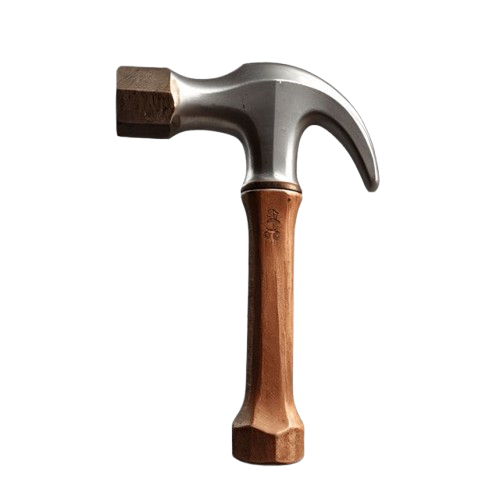

Las transiciones (transition) funcionan como pequeñas animaciones que siguen las mismas características
que la etiqueta 'transform' (cambio de posición, tamaño, rotación...) aunque con la capacidad de poder
especificar una duración para que se produzca dicha transformación y así poder utilizarla como una
animación sencilla.
Para poder observar su funcionamiento vamos a utilizar un < div> llamado 'martillo' que contiene el
dibujo de un martillo

A este < div> le vamos a aplicar varias transiciones (de posición, tamaño y rotación) y para que
podamos activar cada una de ellas en el momento que queramos deberás pasar el cursor por
encima de
cada ejemplo. Es muy importante tener en cuenta que para que 'transition' funcione en todos
los navegadores deberemos repetir la propiedad anteponiendo los prefijos de cada uno de los
navegadores:
-webkit- (para Chrome y Safari)
-moz- (para Firefox).
-o- (para Opera)
-ms- (para versiones modernas de Internet Explorer).
Transición con múltiples propiedades
Para especificar el cambio de varias propiedades con diferentes tiempos para para cada una de ellas,
únicamente tenemos que separar las diferentes propiedades con ",".
Así, en este ejemplo, al pasar el cursor por encima, se producirán 6 cambios de propiedades al mismo
tiempo:
- El < div> martillo se moverá 400px hacia la derecha (utilizando 'left') en 1.5 segundos.
- El color de fondo ('background-color') del < div> martillo se convertirá en negro en 2 segundos.
- La anchura del < div> se modificará hasta llegar a los 225 píxeles en 1 segundo.
- La altura del < div> se modificará hasta llegar a los 200 píxeles (empujando hacia abajo el
contenido que le sigue) durante 1 segundo.
- El espacio que hay entre el extremo izquierdo del < div> y el dibujo que éste contiene
('padding-left') se expandirá hasta llegar a los 100 pixeles en 1 segundo.
- El espacio que hay entre el extremo superior del < div> y el dibujo que éste
contiene ('padding-top') se expandirá hasta llegar a los 20 pixeles en 1
segundo.
#martillo{
background-color:orange;
width:100px;
height:175px;
transition:left 1.5s, background-color 2s, width 1s, height 1s, padding-left 1s, padding-top 1s;
}
#martillo:hover{
position:relative;
left:400px;
background-color:black
width:225px;
height:200px;
padding-left:100px;
padding-top:20px;
}
En el primer selector (#martillo) se especifican los valores iniciales (color de fondo 'background-color', anchura 'width' y altura 'height'), los que no se definan (como 'padding-left' y
'padding-top') se tomarán los valores por defecto.
Las palabras mágicas
Aunque no es obligatorio, tenemos la posibilidad de especificar el tipo de movimiento y si debe existir
algún retardo para que empiece la animación.
Además, como todavia es necesario repetir el código anteponiendo los prefijos -webkit-, -moz-, -op- y
-ms- (para asegurar la compatibilidad con todos los navegadores), es interesante poder especificar todos
estos parámetros en una sola línea.
transition:[propiedad a modificar] [Duración en segundos] [Tipo de animación] [Retardo];
transition: width 2s ease-out, 0.5s;
[Propiedades a modificar]:
En los ejemplos anteriores hemos utilizado unas cuantas propiedades, pero se pueden utilizar muchás más,
como:
all (selecciona todas)
background-colo
border
border-radius
color
top
bottom
left
right
box-shadow
width
height
line-height
margin
opacity
word-spacing
letter-spacing
fill
padding
stroke
text-shadow
vertical-align
visibility
z-index
[Duración en segundos]:
Se debe especificar el número de segundos que va a durar la animación.
Primero se escribe un valor numérico (los segundos) y seguido la "s" (por ejemplo: 3s).
[Tipo de animación]:
Esta posibilidad es opcional. Tenemos la posibilidad de indicar un tipo de 'easing', es decir, si la
animación empezará suavemente e irá acelerándose progresivamente, si pasará todo lo contrario o si el
movimiento tendrá una velocidad uniforme durante todo su recorrido entre otras.
Algunas de las posibilidades son las siguientes:
- linear: La velocidad de la animación es uniforme en todo el recorrido.
- ease: La velocidad se acelera al inicio, luego se retarda un poco y se acelera al final de
nuevo.
- ease-in: La animación empieza lentamente y va aumentando progresivamente.
- ease-out: La animación empieza muy rápida y va descendiendo progresivamente.
- ease-in-out: La animación empieza y acaba lentamente, y es en la parte central del recorrido
donde la velocidad es más rápida.
[Retardo]:
En este apartado es posible posible especificar un tiempo (en segundos) que el navegador esperará antes
de iniciar la animación.
Se especifica el número de segundos a esperar seguido de la "s" (por ejemplo: 1s).
#martillo{
opacity:1;
transition:opacity 2s ease-out 0.5s;
}
#martillo:hover{
opacity:0;
}

Cuando coloques el cursor encima del martillo que hay sobre estas líneas, primero -se esperará medio
segundo (0.5s)-, después de la espera, el martillo se irá haciendo transparente en una animación con
deceleración (ease-out) que durará 2 segundos (empezará muy rápido y a medida que vaya haciendose
transparente irá reduciendo la velocidad).
Compatibilidad con todos los navegadores
Para garantizar la compatibilidad con navegadores antiguos, las transiciones es conveniente que lleven
los prefijos, quedando de esta manera un código más largo que la deuda exterior de Zaire.
Así, el código del ejemplo anterior queda de la siguiente manera:
#martillo{
opacity:1;
-webkit-opacity:1;
-moz-opacity:1;
-o-opacity:1;
-ms-opacity:1;
transition:opacity 2s ease-out 0.5s;
-webkit-transition:opacity 2s ease-out 0.5s;
-moz-transition:opacity 2s ease-out 0.5s;
-o-transition:opacity 2s ease-out 0.5s;
-ms-transition:opacity 2s ease-out 0.5s;
}
#martillo:hover{
opacity:0;
-webkit-opacity:0;
-moz-opacity:0;
-o-opacity:0;
-ms-opacity:0;
}
Hasta hace poco Internet Explorer 9 todavia no era compatible con las transiciones, mientras que el
resto de navegadores lo aceptan desde versiones anteriores a las actuales.